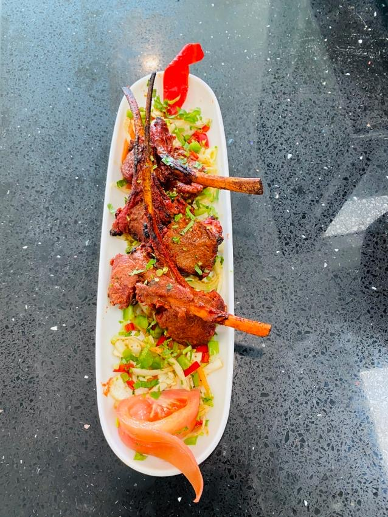
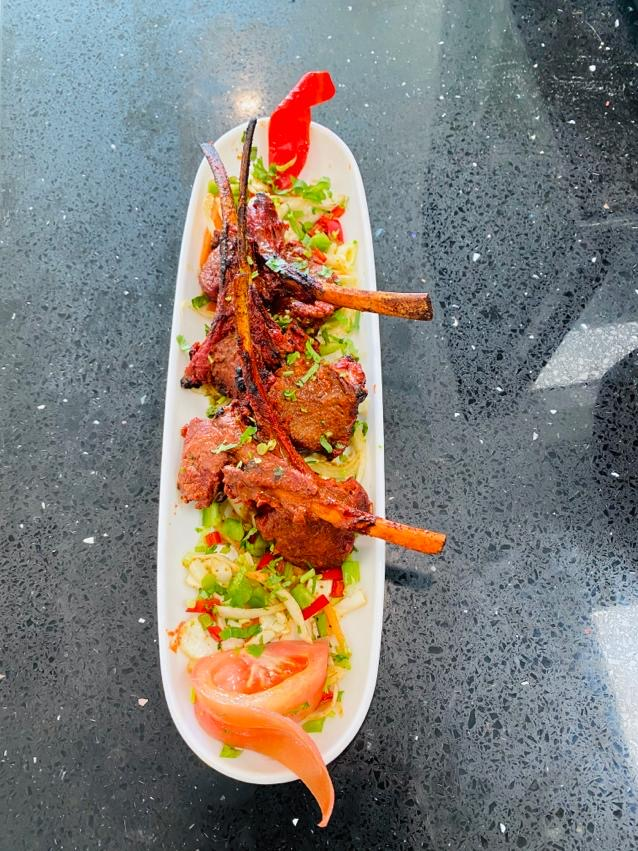

OUR RESTUARANT
Welcome to an excellent exploration of Africa�s culture through it�s cuisine at �HOTBITS�. African cuisine is known by its sophisticated use of exotic spices and herbs since ancient days. Food is an integral part of Africa�s culture with varied cuisines differing according to its community and culture. Our cuisine is distinguished by a great variety of food, spices and cooking techniques.

 
